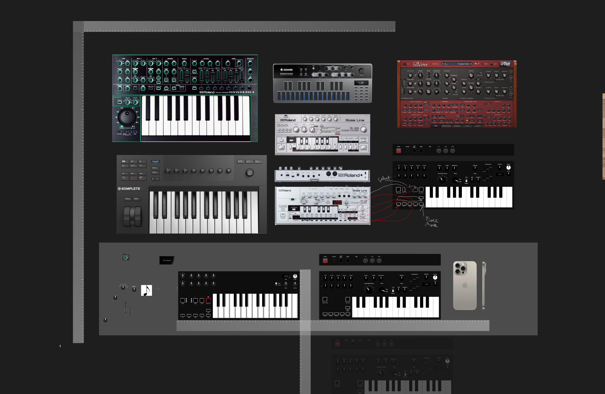
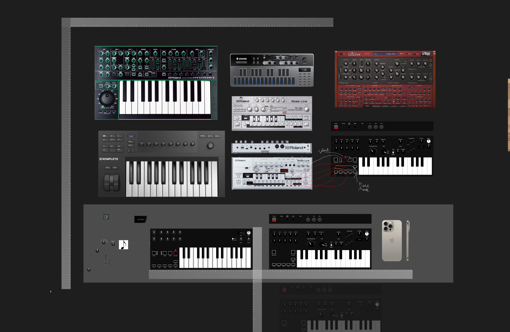

Projects
Roland 303-Inspired Synthesizer
Currently collaborating with musician, DJ, and producer Justus Walker on developing a custom synthesizer inspired by the iconic Roland 303. The project combines digital design and electronic music innovation, utilizing tools like Figma for interface design and Fusion 360 for hardware modeling. While still in the pre-production phase, we are focused on perfecting the internal logic and design architecture before moving into physical testing and prototyping. This synthesizer project represents a fusion of classic analog sound design with modern engineering approaches.
If you have skills that could contribute to this project or are interested in collaborating, please feel free to reach out. We welcome expertise in electronics, sound design, hardware prototyping, or any related fields.
 

NotionWorks
NotionWorks strives to help and educate people on Notion products and how they can be used to organize, automate, and maximize any part of your personal or professional life. Whether you're a professional, student, or hobbyist, Notion products can help you connect all the tools and services you use to do what you love—easier, simpler, and faster. I created this initiative to deepen my own understanding of Notion's professional applications while developing custom solutions for clients, combining personal learning with practical implementation.
Visit notionworks.org to learn more about the project
Personal Website & Client Portal
Built my personal portfolio website from scratch using Cursor IDE and Claude Sonnet 3.5 LLM, creating a clean, minimal design that effectively showcases my work. The development process combined AI-assisted coding with custom design decisions to create a unique and professional web presence. The site is hosted on GitHub Pages for reliable deployment and version control. For client management, I integrated a Softr-based client portal and use Notion as an internal database to track and manage client projects efficiently.